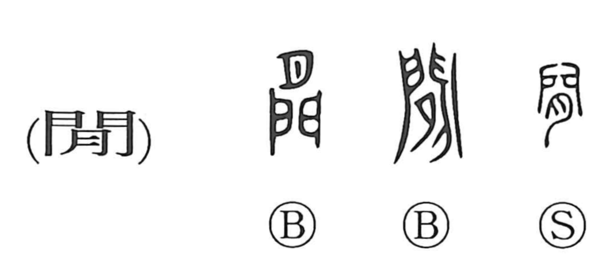

間

Uncategorized
Kun: aida, ma | On: kan, ken
between ・ interval ・ space ・ gap ・ time ・ opening ・ calm ・ quiet
Explanation
Originally written as 閒, this character is a compound of a gate (門) with what looks like the moon (月) but in early forms is actually the flesh radical (肉) set above it. Bronze inscriptions even show the graph 外 written within the gate. Together these elements depict a rite performed at the gate of an ancestral mausoleum, where meat was offered in prayer—a scene centered on the threshold that separates outside from inside. From this image of a dividing boundary arose the senses of an interval or stretch of time and space (aida, ma), a gap or opening, and, by extension, a state of calm or quiet.